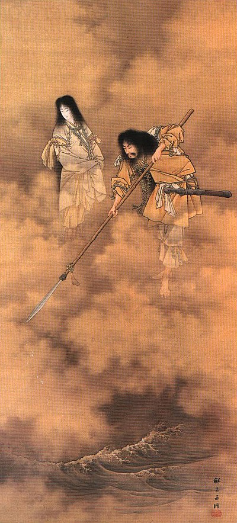

Primii zei au făurit două ființe divine, una masculină, Izanagi, și una feminină, Izanami și le-au însărcinat cu crearea primului pământ. Pentru a le ajuta să facă acest lucru zeii le-au dat și o naginată, decorată cu nestemate, cunoscută sub numele de Amanonuhoko (Halebarda divină a mlaștinii).
Cele două zeități au plecat apoi pe podul dintre rai și pământ, Amenoukihashi („Podul plutitor al Paradisului”) și au agitat marea cu halebarda. Când stropi de apă sărată au căzut de pe halebardă, au format insula Onogoro. Izanagi și Izanami au coborât de pe pod și și-au făcut o casă pe insulă. În final, ei hotărât să se împreuneze pentru a popula insula. Au construit un stâlp numit Amenomihashira, iar în jurul lui un palat numit Yahirodono.
Izanagi și Izanami au îconjurat în direcții opuse coloana construită în centru, iar când s-au întâlnit Izanami, zeitatea feminină, a fost cea care a vorbit prima. Lui Izanagi nu i s-a părut acest lucru potrivit, dar în cele din urmă a avut cu Izanami doi copii: Hiruko și Awashima, care însă având un aspect neplăcut nu au fost considerați zeități. 
Disperat de moartea lui Izanami, Izanagi întrepride o călătorie către „Yomi”
(„tărâmul întunecat al morților”). El își dă seama că există puține diferențe între acest tărâm subteran și cel de deasupra, cu excepția întunericului etern care se instalase în Yomi. Cu toate acestea, întunericul acesta era îndeajuns pentru a-l face să tânjească după lumina și viața lumii din care provenea.
Izanagi a căutat-o repede pe iubita sa și în cele din urmă a găsit-o. La început zeul nu a putut să o vadă pe Izanami în întregime, deoarece umbrele îi acopereau înfățișarea. Când i-a cerut acesteia să se întoarcă în lumea de deasupra, Izanami i-a răspuns că este prea târziu deoarece ea a consumat deja mâncare din lumea morților fiind astfel acum o ființă aparținând acestei lumi. Ea nu mai putea să se întoarcă printre cei vii.
Izanagi a fost șocat când a auzit acestea, dar nu a vrut să cedeze în fața dorințelor iubitei sale de a fi lăsată pe tărâmul întunericului. Când Izanami dormea, el i-a luat pieptele care îi strângea părul lung și l-a aprins ca pe o torță.
Când a făcut lumină, a rămas uimit de înfățișarea oribilă a celei care odată a fost frumoasa și grațioasa Izanami. Ea era acum o formă putredă de carne.
Plângând după Izanami, Izanagi nu și-a mai putut stăpâni frica și a început să alerge, intenționând să se întoarcă în lumea celor vii și să-și părăsească pentru totdeauna soția.
Izanami s-a trezit, și țipând l-a urmărit pe Izanagi. Ea a trimis și niște shikome, creaturi morbide feminine, ca să-l bântuie pe Izanagi și să-l aducă din nou la ea. Încercând să scape de shikome Izanagi aruncă pieptenele soției sale, care se transformă într-un desiș de bambus împiedicând trecerea urmăritorilor.
În cele din urmă, după multe încercări, Izanagi ajunge la granița dintre cele două lumi și împinge un bolovan la gura peșterii care duce spre Yomi.
Izanami și însoțitoarele ei nu mai pot continua drumul, dar zeița îi strigă soțului ei că dacă o părăsește ea va ucide zilnic 1000 de oameni. Izanagi îi răspunde că el va da naștere altor 1500 în schimb.
Exilat din Rai, Susanoo vine în provincia Izumo. El întâlnește un om bătrân și pe soția lui, care plângeau lângă fiica lor. Cei doi explică faptul că la început au avut opt fiice, dar șapte dintre acestea au fost devorate una câte una, în fiecare an de un dragon numit Yamata-no-orochi ("șarpele cu ramificat în opt", despre care se zicea că trăiește în Kosi). Teribilul dragon avea opt capete și opt cozi. Kusinada sau Kushinada-Hime era ultima din cele opt fiice, care în mod normal urma să fie devorată de dragon.
Susanoo care știa de relația celor doi bătrâni cu zeița Amaterasu a hotărât să o salveze pe fată cu condiția ca aceasta să-i devină soție. Părinții au acceptat, iar Susanoo a transformat-o pe Kushinada într-un pieptene și a pus-o cu grijă în părul său. A poruncit apoi să se construiască un gard în jurul casei lui, care să aibă opt porți, opt mese la fiecare intrare, opt butoaie așezate pe fiecare masă și în fiecare butoi vin de orez fiert de opt ori.
Orochi a intrat și a fost ademenit de vinul din butoaie. A început să-l bea, dar a fost ucis de Susanoo. Când Susanoo îl tăia în bucăți pe dragon a descoperit că poate folosi coada lui drept o sabie excelentă. Sabia a fost mai târziu prezentată lui Amaterasu și i s-a pus numele de Ame no Murakamo no Tsurugi. Kusanagi va apărea mai târziu în multe alte mituri.